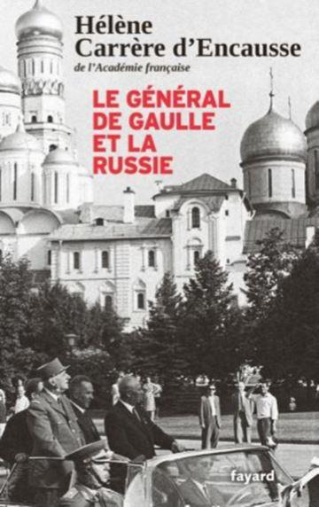
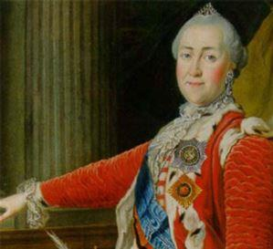
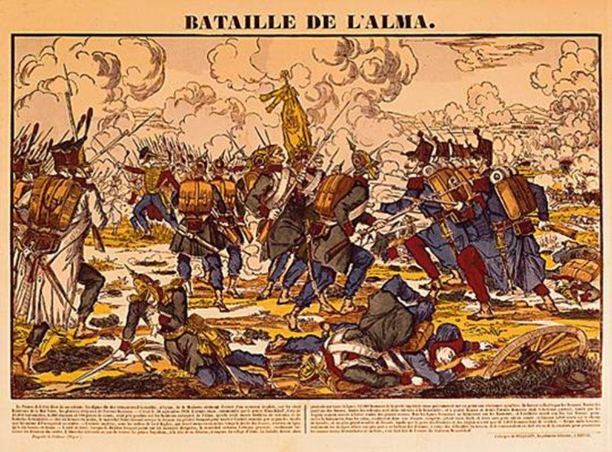
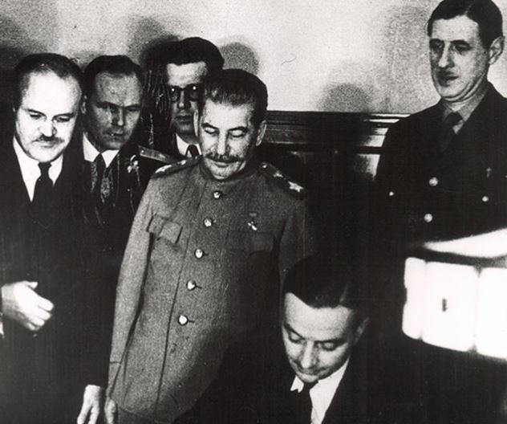
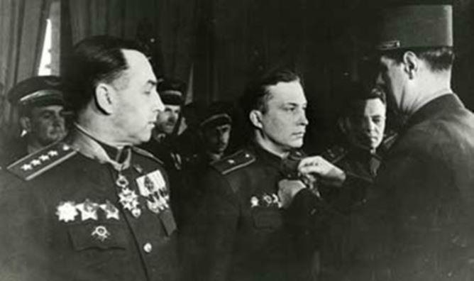
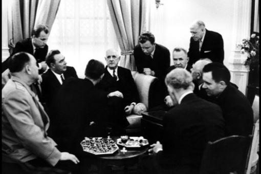
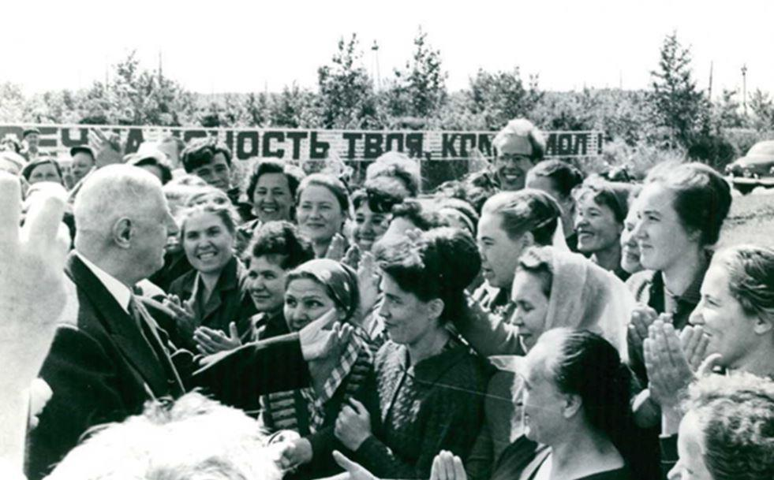
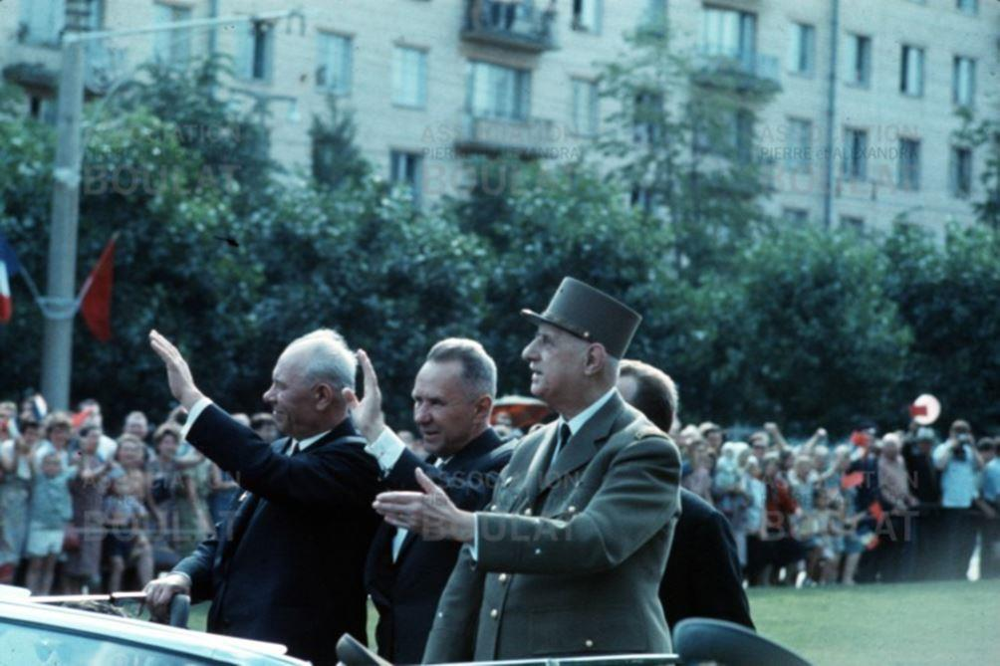
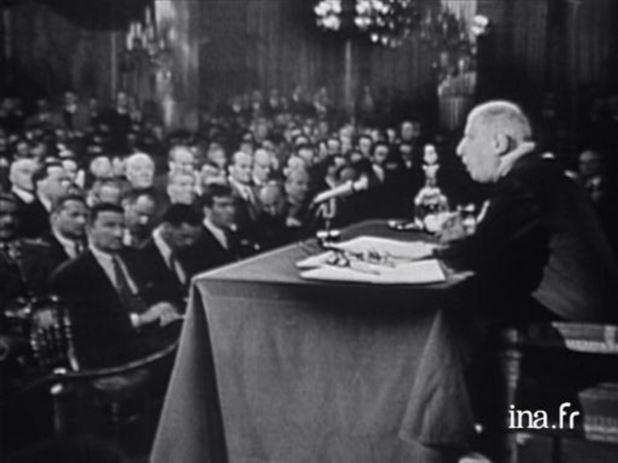

De Gaulle est l'un des rares chefs d'État à avoir rencontré les trois dirigeants de l'URSS que furent Staline, Krouchev et Brejnev. C'est ce que Hélène Carrère d'Encausse disait dans l'émission « Spéciale Russie » diffusée récemment sur la chaîne Histoire dans le cadre du magazine « l'Histoire en marche » Durant cette émission qui coïncidait avec la parution de son ouvrage « De Gaulle et la Russie » elle donne un éclairage très intéressant sur ce que de Gaulle pensait des rapports entre la France et la Russie.
UNE AMITIÉ ANCESTRALE
Contrairement à nos hommes politiques actuels qui ne vivent que dans l'actualité (j'allais écrire « leur actualité ») de Gaulle embrassait dans sa vision plusieurs siècles d'histoire. On réalise alors combien les liens du passé entre la France et la Russie sont encore présents. Et cela remonte au XIème siècle lorsqu'Anne de Kiev devint reine de France en épousant le petit-fils de Hugues Capet qui régna sous le nom d'Henri Ier, et que de leur union provient ainsi un sang russe dans toute la lignée royale de France qui en descendit.
Les relations diplomatiques entre les deux pays datent de 1717, voici tout juste trois siècles. Catherine II manifestait beaucoup d'intérêt pour la culture française, en particulier pour l'œuvre de Voltaire et de Diderot et la langue Française était écrite et parlée dans la société Russe.
Cependant, la Grande Catherine manifesta son désaccord avec la Révolution Française Cela entraîna la rupture des relations diplomatiques et la dénonciation du traité de commerce de 1787. Cependant, les liens avec l'aristocratie française ne furent pas rompus et la Russie accueillit un certain nombre d'émigrés venant de ses rangs, tout comme l'inverse se produisit en 1917.
LES GUERRES NAPOLÉONIENNES
1812 fut l'année de la guerre avec la France de Napoléon, mais les combats, souvent violents, sur le sol russe et ailleurs en Europe donnèrent l'avantage aux troupe russes et l'empereur dut capituler en 1814. Cet évènement marqua le début de la fin du règne de Napoléon. Cette guerre n'eut cependant que peu d'influence sur les échanges culturels entre les deux pays. Le second conflit qui opposa la France à la Russie fut la Campagne de Crimée de 1854, durant le second empire de Napoléon III. Il naquit d'un différent diplomatique entre l'empire Russe et une coalition formée par l'empire Ottoman, la France, le Royaume Uni et le royaume de Dardaigne. Le problème venait du développement des moyens de transport qui avaient considérablement augmenté le nombre des pèlerins vers les lieux saints de Palestine, et les Catholiques ne réussirent pas à s'entendre avec les Orthodoxes sur le nombre des ecclésiastiques, ce qui n'était qu'un prétexte.(1) Alliés aux Anglais, les troupes de Napoléon III remportèrent la victoire de l'Alma, une rivière qui se trouve sur la route de la ville de Sébastopol, dans laquelle les Anglais voulaient établir une base navale.

LE RETOUR DE LA DIPLOMATIE ET LA GUERRE
Dès 1855, le Tsar Alexandre II chercha à rétablir les relations diplomatiques avec la France, ce qui fut fait en 1857. En 1878, la Russie participa à l'exposition universelle de Paris. Ensuite, il y eut toute une série d'échanges culturels entre les universités des deux pays et les relations furent stables jusqu'en 1917. C'était lère de la « triple entente » qui liait la Russie, l'Angleterre et le France. À la révolution Russe, la société française se scinda en deux, une partie s'opposant et l'autre soutenant ladite révolution. Il faut dire que, au début de la guerre, la France était devenue à la fois le premier créancier et le principal partenaire économique de la Russie. (2)
En 1924, la France reconnut officiellement l'Union Soviétique, mais les rapports restèrent assez froids. En 1943, le gouvernement de Moscou reconnut le Comité Français de Libération Nationale qui trouvait son origine dans la France Libre, qui devint la France Combattante en 1942, avant de s'appeler CFLN en 1943. En 1944, le CFLN devint le Gouvernement provisoire. En fait, les relations entre de Gaulle et Staline avaient commencées dès 1941. Cette reconnaissance était extrêmement importante pour de Gaulle, car il connaissait le « poids politique » du Part Communiste en France.
De Gaulle, dès 1940, alors que le pays sombrait, avait perçu que l'Allemagne allait perdre la guerre alors que les Américains étaient beaucoup plus dubitatifs. En vérité, ce n'est qu'après que l'Armée Rouge eu vaincu la Wehrmarcht à Stalingrad en 1943 que Roosevelt, malgré l'insistance de Churchill qui lui réclamait à cors et à cris depuis 1942, lança les opérations du débarquement en Normandie. Ce débarquement avait pour objectif principal d'empêcher que les troupes de Staline aillent trop loin vers l'ouest de l'Europe... De Gaulle avait été soigneusement écarté des préparatifs et n'a été informé qu'au dernier moment. Il y avait donc un certain climat de « suspicion » entre Roosevelt et lui. La reconnaissance de de Gaulle par Staline arrivait ainsi à point nommé.
LA PRÉPARATION DE L'APRÈS-GUERRE
De Gaulle s'intéressait plus aux hommes qu'aux idéologies. Son but unique était de redonner à la France la place qu'elle occupait depuis plus de trois siècles dans le « concert des Nations ». Il connaissait les sentiments de Roosevelt à son égard et il se méfiait des intentions de Churchill concernant l'Empire Français du Moyen-Orient et notamment la Syrie.
Un appui du côté de l'Union Soviétique pouvait « rééquilibrer » les choses, même si Staline s'était montré relativement peu réceptif sur la question du maintien des frontières de l'Empire Français.
Le voyage à Moscou, en passant par l'Egypte, l'Iran et Stalingrad a été déterminant Parti de Paris le 24 novembre 1944, de Gaulle ne quittera Moscou que le 10 décembre. Les discussions qu'il eut avec Staline ont permis de conclure une sorte d'accord tacite qui confortait de Gaulle en tant que chef du gouvernement français, appuyé par les communistes. L'objectif de de Gaulle était double : d'une part faire en sorte que le Gouvernement dont il était à la tête soit reconnu par l'URSS et d'autre part que la France soit dans le camp des vainqueurs. Enfin, subsidiairement, de Gaulle voulait évoquer également la frontière franco-allemande et notamment sur la rive gauche du Rhin. De son côté, Staline avait besoin de de Gaulle pour l'appuyer face aux anglais et aux américains pour la frontière polonaise. (3) Un accord fut trouvé sur les deux premiers points mais Staline resta très évasif sur le dernier.
L'ÉCLIPSE DU POUVOIR ET LA REPRISE EN MAIN
De Gaulle quitte le pouvoir le 20 janvier 1946, après avoir constaté que la nouvelle assemblée issue des élections du 21 octobre 1945, ayant ainsi fait du Parti Communiste le premier parti de France, ne lui permettait pas de conduire les affaires du pays comme il l'aurait souhaité, bien qu'étant reconduit à la présidence du Conseil, Persuadé que la France ferait de nouveau et rapidement appel à lui, il se retira à Colombey-les-Deux-Eglises. Ce ne fut cependant qu'en 1958 que le Président Coty fit appel à lui. Même si l'on sait, par différents témoignages (3) qu'il suivait de près ce qui se passait, tant sur le plan national qu'international, il ne fit pratiquement aucune déclaration publique. A son retour aux affaires, en mai 1958, Il lui fallut en priorité mettre fin à la guerre d'Algérie. Après l'indépendance de celle-ci en 1962, il se tourna vers l'Europe pour tenter d'infléchir un processus d'intégration européenne dont l'élément fédérateur était essentiellement américain.
Il proposa donc au Chancelier Adenauer de signer un traité de coopération, établi entre la France et l'Allemagne mais pouvant être étendu aux pays européens qui le souhaiteraient. La France, devenue une puissance nucléaire reconnue, proposait à l'Allemagne sa protection en cas d'attaque et l'Allemagne s'engageait, en contrepartie, à développer des grands programmes industriels avec la France. Le traité fut signé le 23 janvier 1963, mais le Bundestag (4) devait le ratifier avant son entrée en vigueur.
Les américains ne voulaient pas entendre parler de ce traité et firent en sorte que le Bundestag ne le ratifie qu'après l'avoir vidé de son contenu, ce qui le rendait inutile.
LA FRANCE AU-DELÀ DE L'EUROPE
De Gaulle ne dit rien mais agit sans tarder. Conscient que ses véritables adversaires européens se trouvaient en réalité aux États-Unis, il affirma haut et fort l'indépendance de la France par une suite continue d'actions et de déclarations qui contribuèrent grandement à rehausser le prestige international de la France avec laquelle il allait falloir désormais compter. Il s'engage résolument dans un rapprochement avec les pays considérés comme des adversaires des États-Unis. Il faut souligner que de Gaulle n'avait jamais voulu « couper les ponts » avec l’Union Soviétique et avait reçu, dès mars 1960, Nikita Khroutchev. Lors de son retour aux affaires de 1958, les dirigeants soviétiques voyaient en lui un allié potentiel. Il avait notamment énoncé le fameux triptyque « Détente, entente, coopération » qui allait marquer ses relations avec les pays de l'Est. Son rapprochement avec Adenauer les avait quelque peu troublés. Peu de temps après, de Gaulle écrit au président Eisenhower pour lui proposer la mise place d'un directoire « tripartite » de l'OTAN entre les Etats-Unis, l'Angleterre et la France. Cela n'était pas du goût d'Adenauer, à qui de Gaulle n'avait rien dit. On retrouve ici une des caractéristiques de la politique de de Gaulle de toujours garder un équilibre pour ne pas apparaître comme inféodé à quiconque. Le voyage de Khroutchev fut très important car c'est la première fois qu'un chef d'Etat de l'URSS venait en France, et tout porte à croire que de Gaulle avait soigneusement choisi la date car la France était devenue une puissance nucléaire un mois avant.
Néanmoins, la route de Moscou passera par Pékin. Mao Tsé Toung et de Gaulle prennent tous les deux une position critique envers Moscou, en refusant l'accord proposé par Khroutchev sur la proposition d'un pacte de non-agression entre l'Otan et les pays du pacte de Varsovie. Jugeant la situation propice, de Gaulle fait officiellement reconnaître par le gouvernement français la République Populaire de Chine le 27 janvier 1964. (5)
Parallélement, un traité commercial est conclu entre la France et l'Union Soviétique en octobre 1964 et en mai 1965 fut signé le fameux accord de coopération sur l’énergie nucléaire. Les Américains y virent, bien sûr, une provocation supplémentaire à leur encontre...
LE TOURNANT CAPITAL DU VOYAGE À MOSCOU DE 1966
Afin de bien montrer que la France n'entend pas déléguer aux seuls États-Unis le monopole des relations avec l'URSS, de Gaulle se rend à Moscou où il séjournera du 20 juin au 1er juillet 1966. Cette visite est le complément logique de la décision de février 1966 de retirer toutes les forces françaises du commandement intégré de l'OTAN, complétée par une évacuation de toutes les bases étrangères situées sur le sol français. Une telle attitude ne pouvait que plaire aux autorités soviétiques qui lui réservèrent un accueil chaleureux.
Il rencontre pratiquement tous les dirigeants soviétiques et effectue un périple qui le mènera de Moscou à Saint-Pétersbourg, puis en Sibérie et se terminera par Leningrad, Kiev et Volgograd, acclamé partout par une foule dense.
Le 30 juin, veille de son retour, il prononcera son fameux discours sur « l'amitié de la France éternelle envers la Russie éternelle ». Dans ce discours, vibrant hommage à l'âme des peuples qui savent faire la différence entre l'Histoire et les péripéties dues au caractère des hommes, il rappelle les siècles d'une long passé d'amitié entre nos deux peuples. Il termine avec beaucoup de lyrisme en disant que ce passé doit préfigurer l'avenir et que nos deux pays doivent continuer leur route commune et conclut que le moment de la détente et de la coopération en Europe est venu. Il suggère, sans toutefois le dire précisément, qu'il conviendrait d'installer une sorte de « téléphone rouge » entre Moscou et Paris, identique à celui qui existe entre Moscou et Washington.

L'EUROPE DE L'ATLANTIQUE À L'OURAL
On ne peut que constater la vision à long terme qu'avait de Gaulle depuis son discours de novembre 1959 dans lequel il affirmait :
« Oui, c’est l’Europe, depuis l’Atlantique jusqu’à l’Oural, c’est l’Europe, c’est toute l’Europe, qui décidera du destin du monde ! »
La puissance de cette phrase qui bouscule l'ordre bipartite établi au lendemain de la guerre décrit en peu de mots ce que doit être l'Europe du futur et quel rôle elle doit jouer dans le monde. Elle soutien toute la politique étrangère du général de Gaulle et il n'aura de cesse, pour y aboutir, de se doter des moyens nécessaires.
La force de dissuasion, le redressement économique de la France, son rayonnement culturel en sont les témoignages. Personnage hors du commun dans notre histoire, il a su, par sa seule volonté, marquer une étape cruciale pour sortir notre pays de l'irrémédiable déclin auquel il était voué.
LE RETOUR À L'ÉTALON-OR ET L'ORDRE FINANCIER MONDIAL
De Gaulle avait su déjouer le piège des « dollars AMGOT » (6) en prenant de vitesse l'administration américaine qui comptait introduire une monnaie d'occupation dans les territoires « libérés » ce qui aurait fait d'eux des territoires « occupés » Il avait une conscience totale de la bataille financière qui allait se jouer autour du dollar, qui allait devenir la monnaie des échanges internationaux tout en gardant un statut de monnaie domestique américaine. Il avait compris très rapidement que la convertibilité du dollar en or était un leurre qui disparaîtrait rapidement. Dès que les dettes françaises furent remboursées, il demanda l'application de cette convertibilité en échangeant les dollars qui s'accumulaient à la Banque de France contre de l'or physique. On estime qu'environ 900 tonnes ont ainsi été rapatriées entre 1962 et 1967. Il savait parfaitement que la Réserve Fédérale Américaine ne pourrait pas continuer longtemps à « faire semblant » et dénonça cet abus dans une conférence de presse en 1965, accusant les Etats-Unis de s'enrichir sur le dos des autres en imprimant du papier... (7)
UN EXEMPLE QUI AURAIT DÛ ÊTRE SUIVI
A la fois visionnaire et pragmatique, tous ceux qui aujourd'hui se réclament d'une sorte de filiation politique avec lui devraient surtout prendre la mesure de leurs différences. On peut l'aimer ou bien le détester, mais il ne saurait susciter l'indifférence de ceux qui l'ont acclamé ou subi. Il est regrettable qu'il n'ait pu achever ses « mémoires d'espoir » qui auraient certainement été une source d'inspiration pour les générations futures, mais laissons-lui une ultime parole :
« Pour faire de grandes choses, il faut de grands hommes. Et ils ne le sont que parce qu'ils ont choisi de l'être. »
Voir « En écoutant de Gaulle » Claude Guy Ed Grasset et j'ai personnellement reçu le témoignage de Pierre Clostermann, député UDSR qui avait rendu plusieurs visites privées au Général entre 1946 et 1958
Partager cette page